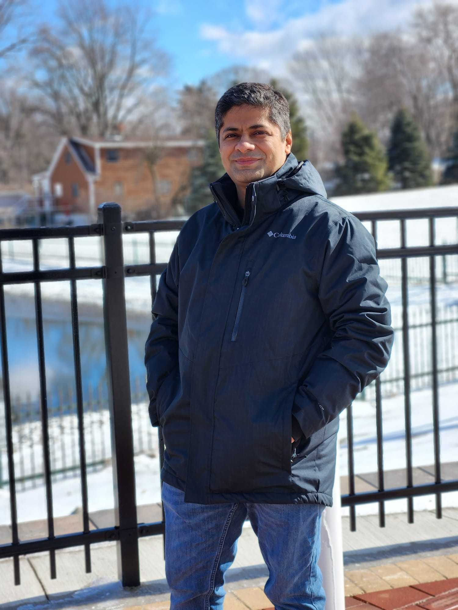
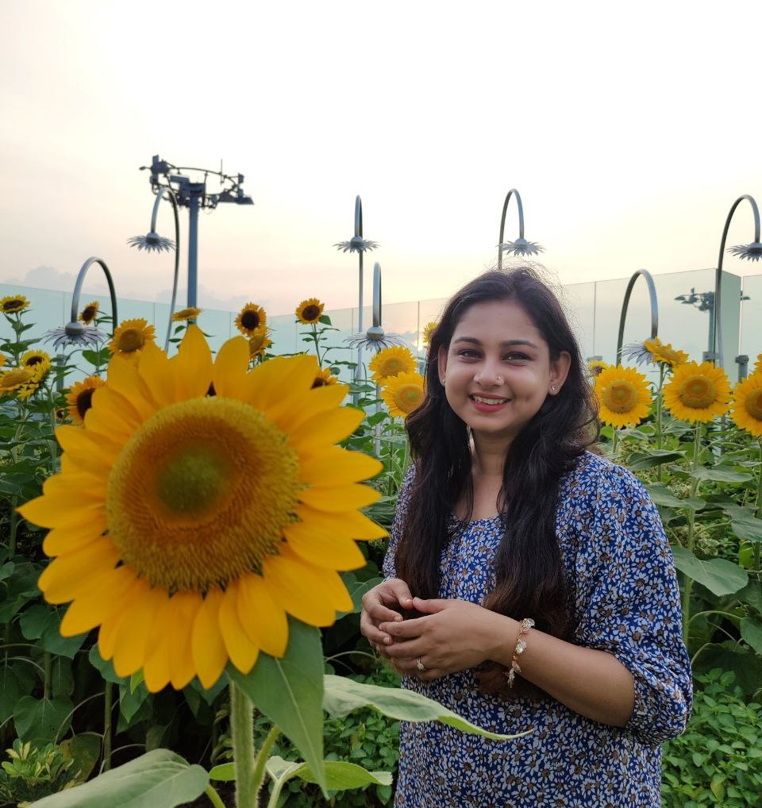
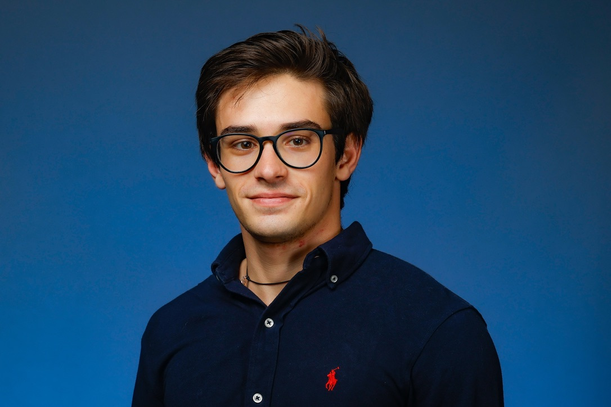
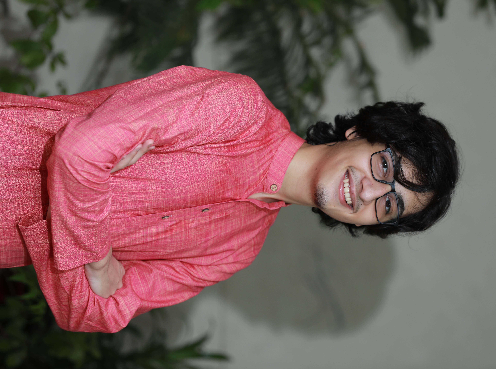

|
Sourav Medya
I am very fortunate to work with the following students:
Current Team Members
Graduate Students
|
 |
Jaykumar Kakkad
Jaykumar Kakkad is pursuing a Master of Science degree in computer science at the University of Illinois at Chicago.
His primary research focus is explainability of Graph Neural Networks (GNNs) and graph data distillation. He also has a keen interest in exploring problems at the
intersection of Computer Vision and Reinforcement Learning.
|
|
 |
Homaira Huda Shomee
Homaira Huda Shomee is a doctoral student who has joined the Department of Computer Science at the University of Illinois Chicago in Fall 2023.
She received her bachelor's degree in Computer Science from Brac University, Bangladesh in 2021.
Her research interests are primarily in Data Science and Machine Learning on Graphs.
|
 |
Peyman Baghershahi
Peyman joined UIC in the Fall of 2023 as a Ph.D. student. Prior to this, he obtained a master's degree in Artificial Intelligence and
Robotics from the University of Tehran, Iran. His primary research focus lies in creating transparent and reliable models for graph representation learning.
Furthermore, he is interested in exploring the applicability of GNNs on knowledge graphs.
|
|
|
Jaspal Jannu
Jaspal joined University of Illinois Chicago as a Master’s student in Computer Science in Fall 2022. He received his
Bachelor’s degree in Electrical Engineering from Indian Institute of Technology Bombay, India.
His research interests include Theoretical ML, Explainable AI, and Machine learning on Graphs.
|
|
 |
Pietro Lodi Rizzini (Co-advised with Prof. Zhiling Lan)
Pietro Lodi Rizzini is a Master’s student in Computer Science at the University of Illinois Chicago.
He joined in Fall 2023 as part of the joint double degree program with Politecnico di Milano, Italy,
where he previously earned his bachelor’s degree in Computer Engineering in 2022.
His research interests include Data Science and Machine Learning,
and he is currently working on problems at the intersection of Graph Machine Learning and High Performance Computing.
|
Interns
|
 |
Pranav Nyati
Pranav Nyati is a fourth-year undergraduate student pursuing an integrated bachelor’s and master’s degree in Computer Science from the Department of
Computer Science and Engineering at the Indian Institute of Technology Kharagpur, India. His research interests are in Machine Learning and
Deep Learning, and is currently working on the Explainability of Graph Neural Networks.
He is also deeply interested in probabilistic and statistical aspects of Machine Learning.
|
|